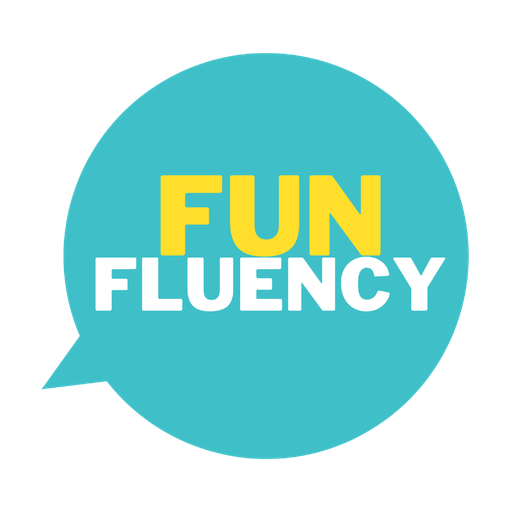

Fun Fluency Hub
Opening… sign in with your Fun Fluency account if asked.
Taking a while? This opens it directly (the address bar will show Google's address).

Opening… sign in with your Fun Fluency account if asked.
Taking a while? This opens it directly (the address bar will show Google's address).